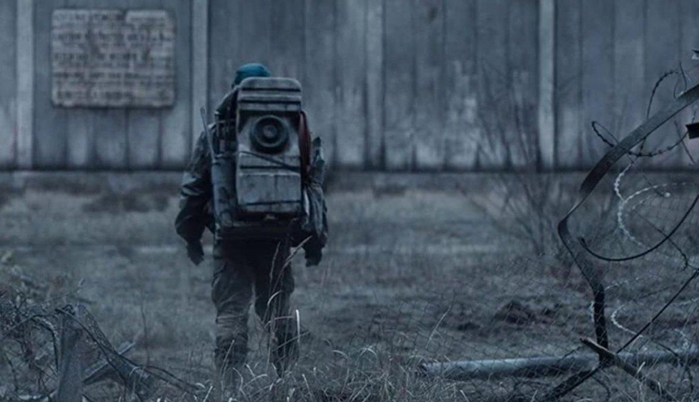
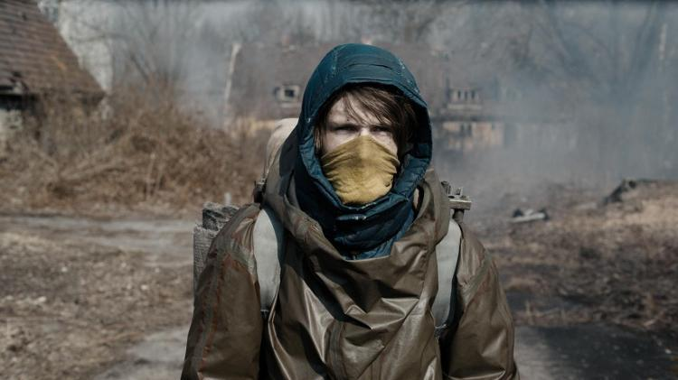
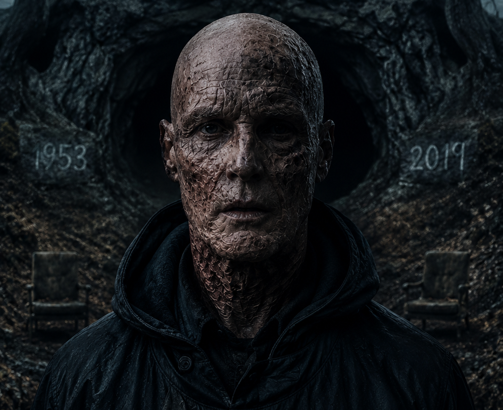
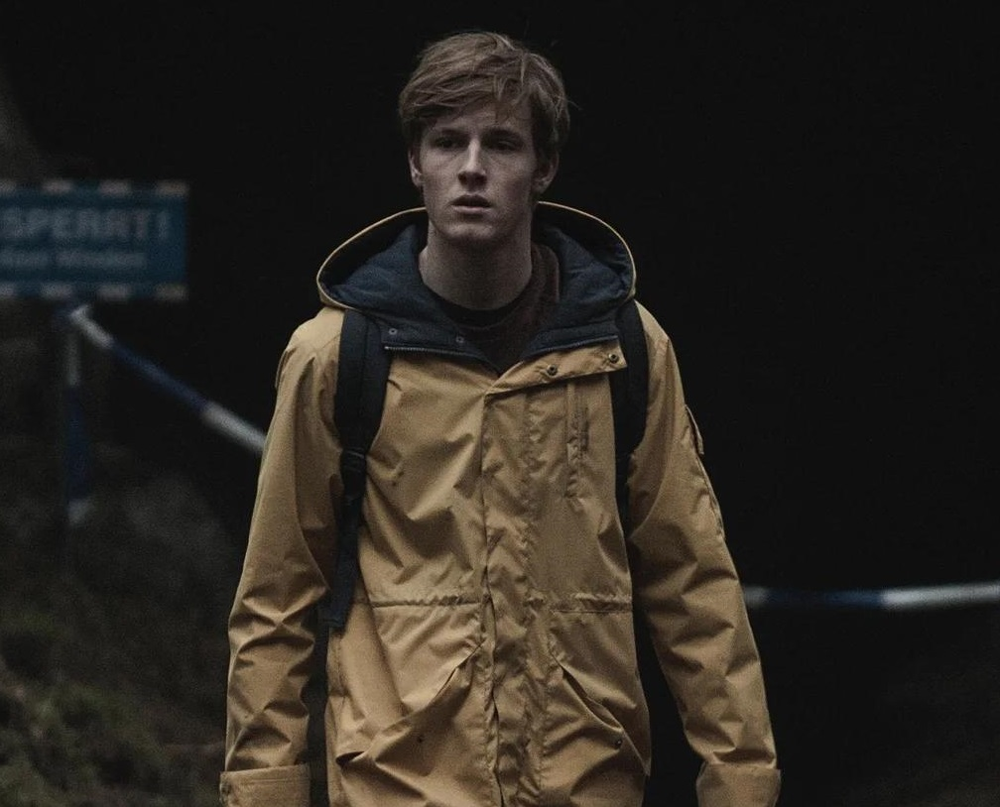
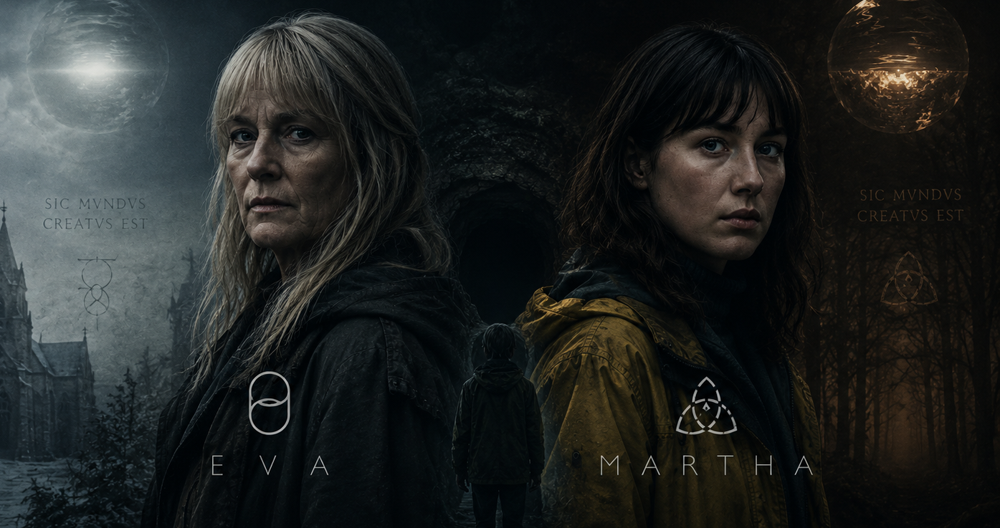
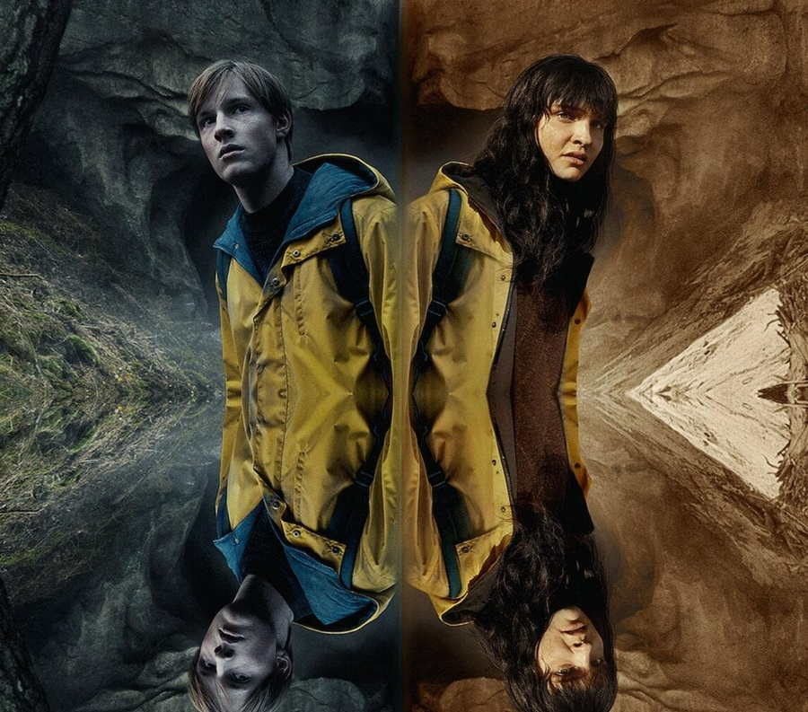

Dark não foi apenas uma série sobre viagem no tempo. A produção alemã da Netflix criou um dos universos mais complexos da televisão, misturando física quântica, tragédias familiares e paradoxos impossíveis de entender à primeira vista.
Durante três temporadas, a série apresentou dezenas de linhas temporais, versões alternativas dos personagens e eventos que pareciam se repetir infinitamente.
E quando tudo terminou, muita gente ficou com a mesma pergunta:
" O que realmente aconteceu no final de Dark? "
Aqui está a explicação completa do desfecho da série.
O Grande Erro de Quem Tenta Entender Dark


A maioria das pessoas tenta entender Dark pensando apenas em viagem no tempo.
Mas a série vai muito além disso.
🌀 Os 3 pilares de Dark:
- Loops temporais
- Universos paralelos
- Paradoxos causais
Em Dark, passado, presente e futuro existem simultaneamente.
Isso significa que: eventos do futuro criam acontecimentos do passado, que por sua vez criam o próprio futuro novamente.
É literalmente um ciclo infinito.
Quem Era Adam?
Adam foi apresentado como o líder misterioso da Sic Mundus, uma organização obcecada pelo tempo.
No início, ele parecia apenas um manipulador cruel.
Mas então Dark revela algo chocante:
- Adam era Jonas no futuro.


Após décadas preso nos ciclos temporais, Jonas perde completamente a esperança.
Ele percebe que:
🔥 O objetivo de Adam:
- Destruir os dois mundos
- Acabar com o ciclo temporal
- Eliminar o sofrimento infinito
- Apagar a origem de tudo
O mais trágico é que Adam não se tornou mal por poder.
Ele se tornou alguém completamente destruído psicologicamente pelo sofrimento repetido eternamente.
Quem Era Eva?
Enquanto Adam queria destruir os mundos, Eva queria preservá-los.
Eva era Martha do universo alternativo no futuro.

Ela acreditava que o ciclo precisava continuar existindo.
E havia um motivo:
🧬 O segredo central de Dark:
- Jonas e Martha tiveram um filho
- Esse filho deu origem a várias famílias da série
- Sem ele, quase todos deixariam de existir
Isso transforma toda a história em um gigantesco paradoxo.
Os personagens existem porque o ciclo existe... e o ciclo existe porque os personagens existem.
O Mundo de Origem Explicado
O maior plot twist da série é descobrir que:
Nenhum dos dois mundos era o verdadeiro mundo original.
Ambos foram criados artificialmente.
Tudo começou com H.G. Tannhaus.
No mundo original, Tannhaus perdeu o filho, a nora e a neta em um acidente de carro.
Desesperado, ele tentou criar uma máquina do tempo para salvá-los.
Mas o experimento falhou.
Em vez de viajar no tempo, ele dividiu a realidade em dois universos:
🌌 Os universos criados:
- O mundo de Jonas
- O mundo de Martha
Isso significa que praticamente toda a série se passa em realidades artificiais.
Por Que Jonas e Martha Precisavam Morrer?

Claudia finalmente entende a verdade:
o problema não estava no ciclo em si, mas na criação dos dois mundos.
Então Jonas e Martha viajam até o mundo original.
Lá, eles impedem o acidente de carro que destruiu a família de Tannhaus.
🚗 O que muda após isso:
- Tannhaus nunca cria a máquina
- Os mundos paralelos deixam de existir
- O ciclo é destruído
- Jonas e Martha desaparecem
"Para salvar o mundo... eles precisavam deixar de existir."
O Significado Real do Final
O final de Dark fala sobre:
🧠 Os temas centrais da série:
- Luto
- Destino
- Trauma
- Livre arbítrio
- Repetição do sofrimento
Toda a tragédia começou porque alguém não conseguiu aceitar a perda.
E isso criou uma realidade inteira baseada em dor, sofrimento e repetição infinita.
Dark constantemente questiona:
"Somos realmente livres... ou apenas repetimos eternamente os mesmos erros?"
O Final de Dark Foi Feliz?
Depende do ponto de vista.
Jonas e Martha conseguem salvar a realidade, mas deixam de existir no processo.
Ao mesmo tempo, milhares de tragédias são apagadas.
O sofrimento infinito finalmente termina.
E talvez essa seja a mensagem final da série:
Algumas dores só acabam quando o ciclo finalmente é quebrado.